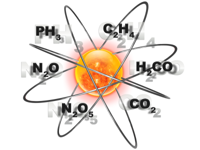

To obtain cross section data and plots, pick the
"Photo Cross Sections" button on the left.
To calculate photo rate coefficients and excess
energies in the solar radiation field, pick the appropiate
button on the left. This will also give you an option to obtain data and plots.
For more detailed information and comparisons with other data, see
"Solar Photo Rates for Planetary Atmospheres and Atmospheric Pollutants,"
W.F. Huebner, J.J. Keady, and S.P. Lyon, Astrophysics Space Sci. 195, 1-294 (1992).
(Interstellar and blackbody rate coefficients and excess energies under development)